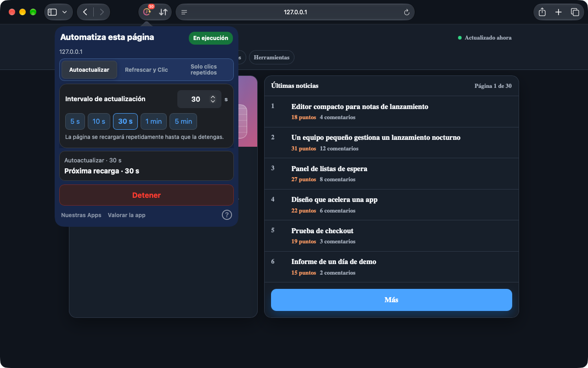
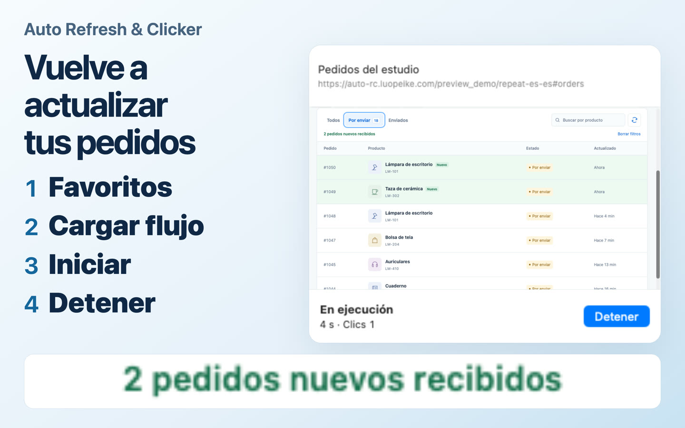
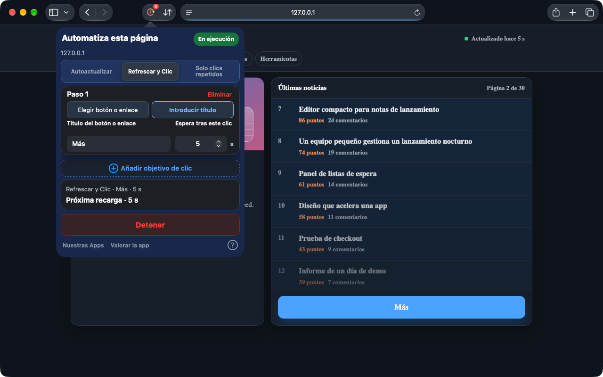
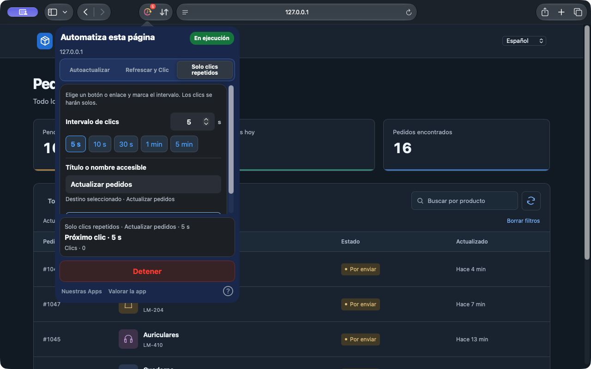

Autoactualizar
Elige un intervalo predefinido o preciso para mantener al día paneles, inventarios y páginas de estado.
Configurar la actualización automáticaAbre tu lista de pedidos desde Favoritos, carga los pasos guardados y programa clics en su botón de actualizar. Puedes hacerlo en la app o con la extensión de Safari.
Guarda varios flujos con nombre para una misma URL completa. Cuando vuelvas a esa dirección, carga el que necesites, revisa los pasos e inícialo. Los flujos se guardan en la app o el navegador donde los has creado.
Leer la guía de configuración

Elige un intervalo predefinido o preciso para mantener al día paneles, inventarios y páginas de estado.
Configurar la actualización automática
Elige un botón o enlace en la página, o escribe su título. Tras actualizar, los clics siguen tu orden, con una espera después de cada paso.
Configurar la actualización con clics
Repite clics sin recargar la página. Selecciona incluso un icono, ajusta el intervalo y deja que la lista se actualice.
Configurar los clics repetidosiPhone / iPad · Mac
Abre la app después de instalarla. Activa la extensión en los ajustes de Safari y permite el acceso al sitio.
Elige un modo y ajusta el intervalo o la espera tras cada paso. Para hacer clic, selecciona un botón o enlace en la página, o escribe su título.
Inicia y comprueba el estado y la cuenta atrás. Puedes detener la tarea o aplicar cambios cuando quieras.
Pon nombre a tus favoritos o abre de nuevo una página desde el historial. Las visitas permanecen en el dispositivo hasta que las borres. Puedes pausar el registro o borrar el historial y conservar los favoritos y los flujos.
PrivacidadAbre la página en la app para iPhone, iPad o Mac, o usa la extensión en una pestaña de Safari. Chrome para ordenador tiene su propia extensión.
Selecciona un icono en la página o escribe el nombre de un botón o enlace. Si cambia parte del nombre, activa los comodines y sustituye esa parte por *. La tarea se detiene si no hay una única coincidencia disponible.
Abre una vez la app instalada y revisa Ajustes de Safari → Extensiones. Usa Safari 15.4 o posterior. Si sigue sin aparecer, contacta con soporte e indica las versiones de macOS, Safari y la app, y el origen de instalación.
En la versión actual de Safari, edita la configuración y aplica los cambios. El resumen muestra la tarea activa. Pulsa Detener para finalizarla.
Consulta el precio y la compatibilidad en cada tienda.